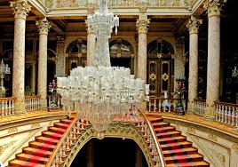
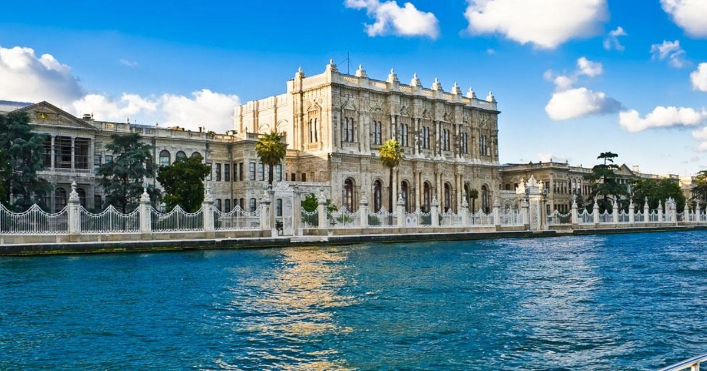

Dolmabahçe Palace If you take a Bosphorus tour, you’ll pass many lavish and intriguing buildings, but the most opulent of them all, surely has to be the 600m long Dolmabahçe Sarayı (Dolmabahce Palace). It took 13 years to build and was completed in 1856, and served as the administrative center of the Ottoman Empire until 1922.  The palace was commissioned by Sultan Abdülmecid (who decided there should be a more European palace than Topkapi) and designed by Armenian architect Karabet Balian and his son Nikoğos Balian. (read Balyan family on wikipedia). It is an ostentatious blend architectural styles including Baroque, Rococo, Neoclassical and modern Ottoman, dripping in luxury. What not to miss at the Dolmabahçe Palace Look out for the handmade parquet floors in the Dining Hall. Carved from rosewood, ebony, and mahogany, they are a delicately masterpiece, almost hidden by the lavish furnishings.  The 4.5 tonne chandelier, in the ceremonial hall was a present from Queen Victoria, and is the world’s largest Bohemian crystal chandelier. The National Painting Museum at Dolmabahce Palace, Istanbul In 2014, the National Palaces Painting Museum (Milli Saraylar Resim Müzesi) opened in an annexe of the palace, containing 202 fine examples of late 19th and early 20th century paintings. Located inside the harem section is the room in which Mustafa Kemal Atatürk - founder of Turkish Republic- stayed, and where he eventually died. Amazing Facts about the Dolmabahce Palace The women of the harem had to the watch the grand ceremonies in the hall through the grilles, behind which they were kept hidden. The founder of the Turkish Republic, Mustafa Kemal Atatürk died in this palace and the clock remains set to the time he died, 9:05am on November 10, 1938. Every year at this time, the whole of Turkey comes to a standstill in remembrance. The construction cost five million Ottoman mecidiye gold coins, which would be the equivalent of around $1.5 billion in 2013 values – the strain it places on the empire’s resources contributed to its deteriorating financial status.